圆极化天线
圆极化天线
调研工作
超表面（Metasurface）是二维超材料，由大量远小于工作波长的 “超原子”（金属 / 介质微结构）在平面上周期性 / 非周期性排布而成。
太赫兹 = 100 GHz ～ 10 THz，比毫米波更高频、波长更短。（石墨烯太赫兹段居多）
阐述对用于超低旁瓣太赫兹相控阵天线的可调石墨烯超曲面这篇文章的理解。
用单层石墨烯做的、不用机械转动、靠电压控制、反射太赫兹波的超表面阵列，能对太赫兹波实现几乎完整一圈（0°～352.5°）的连续相位调节，想让波怎么偏就怎么偏。
石墨烯的特点：极薄、平面化，电导率可以用电压调（这是核心），损耗低、适合太赫兹频段
“电控波束成形” 的基础：改变栅压 → 改变石墨烯费米能级 → 改变等效阻抗 / 相位
| 结合方向 | 天线视角 | 资源 |
|---|---|---|
| 电控波束扫描天线 | 石墨烯超表面做反射阵 / 透射阵，电压调相位→实现太赫兹波束扫描 | 极多，是顶刊常客，6G / 太赫兹必做方向 |
| 圆极化可重构天线 | 用石墨烯调振幅 / 相位，实现线极化→圆极化、左旋↔右旋切换 | 非常多，尤其太赫兹圆极化是热门缺口 |
| 高增益、低剖面天线 | 超表面做阻抗匹配、波前聚焦，提升天线增益、减小尺寸 | 资源极多，经典组合 |
| 电控波束赋形 | 独立控制每个单元相位，实现多波束、广角扫描 | 中等偏多，偏向系统应用 |
| 低 RCS / 隐身天线 | 超表面同时实现辐射 + 散射调控，天线隐身 | 较少，偏小众 |
| 太赫兹通信 / MIMO 天线 | 电控超表面做智能反射面（RIS）辅助通信 | 非常多，近年最热 |
石墨烯+太赫兹+超表面+天线
与圆极化之间的关系：
太赫兹圆极化几乎离不开超表面
石墨烯超表面适合控相位差，控制极化：幅度相等，相位差90°，出圆极化。
石墨烯超表面：电控、宽带、可重构圆极化
小单元圆极化实现方式：
1、单元本身这继承正交双谐振结构：对称开口，十字形，L型，旋转45°的棒。
2、用相邻单元之间的几何旋转实现：把每个超表面单元依次旋转一定角度（比如 22.5°、45°）形成相位梯度让两个正交分量逐步产生 90° 相位差整体阵列实现圆极化。
3、电控方式（石墨烯最擅长）：每个单元加电压独立调相位直接控制 x、y 分量的相位差固定在 90°→ 电控圆极化还能切换左旋 / 右旋。
在ieee中，有关石墨烯超表面居多的文章类型是：可重构、相控阵、波束扫描。
石墨烯本身最擅长的就是电控调相位，相控阵、可重构天线最需要的步骤是电控调整相位。
《一种宽带圆极化缝隙天线的研究与设计》
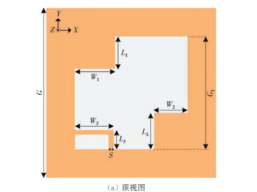
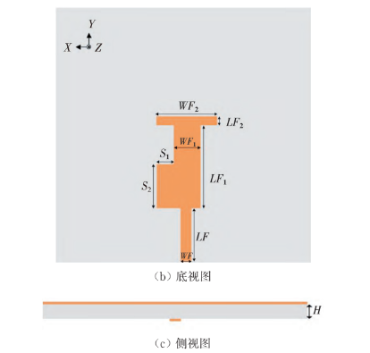
该天线实现右旋圆极化（RHCP）辐射的核心原理是通过特定结构激发出两个振幅相等、空间正交且相位相差 90° 的电流分量
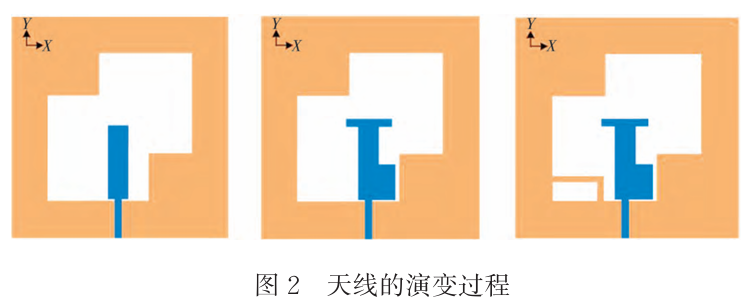
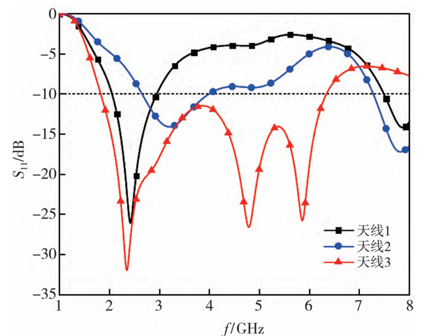
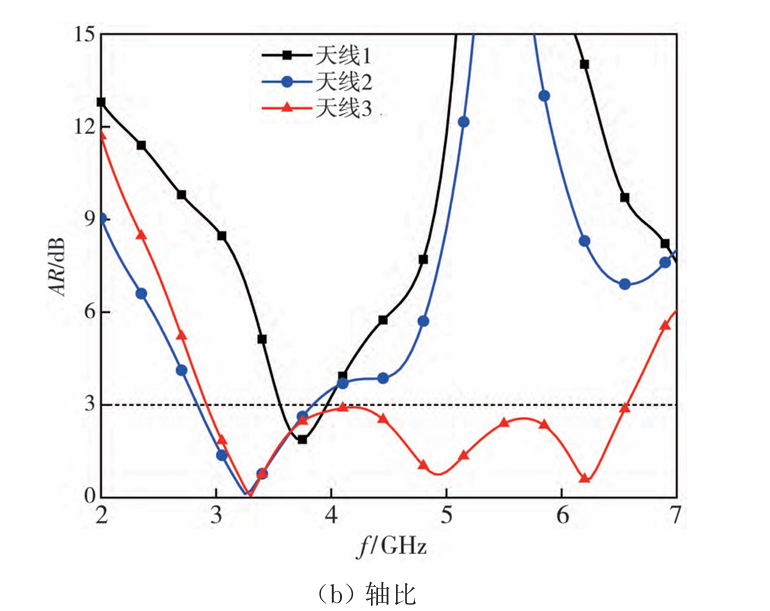
天线1在2.56 GHz处产生 了一个谐振点， −10 dB阻抗带宽为2.14~ 3.13 GHz。
1 | 天线1的基础结构是由阶梯形缝隙和矩形微带馈线组成的 。缝隙天线的谐振原理通常遵循“半波谐振”规律。 |
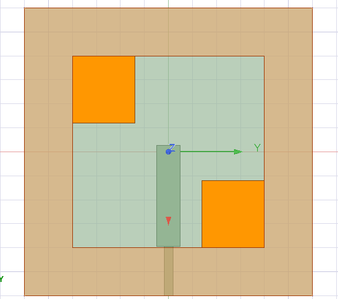
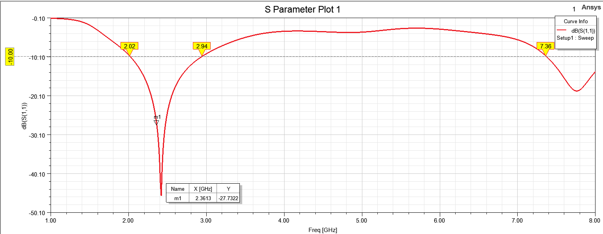
缝隙天线自带高次模结构，在7.8GHz左右产生一个谐振。
天线2分别在2.97 GHz 和7.28 GHz产生了 两个谐振点。
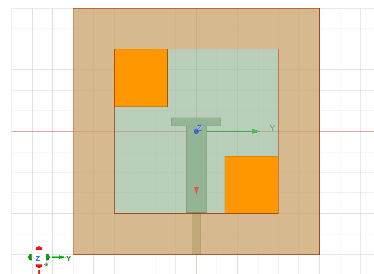
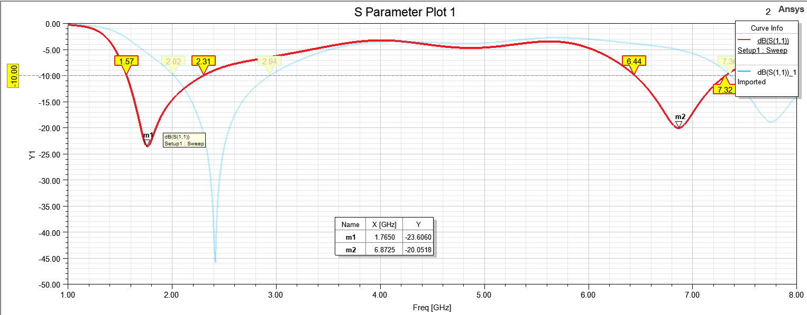
将模型1中的s曲线导入，发现和加了T型横枝节相比，频率下降。因为电流路径（电长度）的增加 和 末端电容加载效应（Capacitive Loading）。再者就是因为：微波电路中的“末端电容加载（Capacitive Loading）。T 形枝节向左右延伸出来的两小截微带线，在微波电路中被称为“开路短截线”（Open-circuited Stubs）。当开路短截线的长度小于四分之一波长时，它在等效电路上呈现为纯粹的电容性（Capacitive）。当你增加了系统末端的分布电容（C 变大），整个系统的谐振频率就会理所当然地下降。
天线3增加T型右侧贴片：
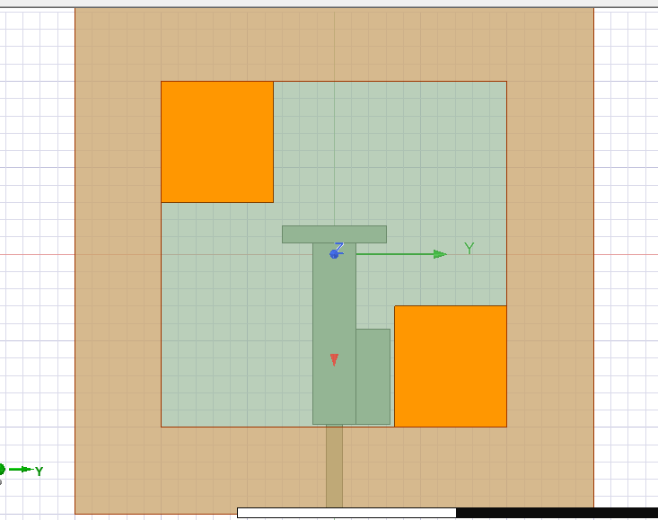
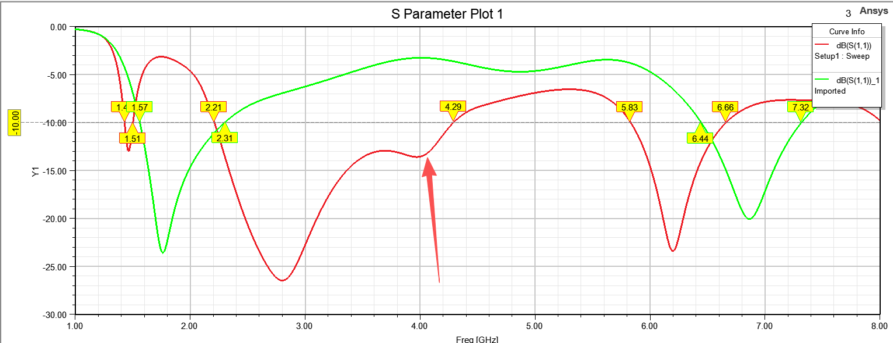
2.8 GHz 左右的谐振点，是阶梯缝隙的主谐振；
T 型馈线（未加旁贴片时）只有调节电长度的作用
6.2 GHz 的高频是宽缝隙自带的高次模，主要是由 T 型横臂作为激发器“勾”出来的。侧边小贴片并不是高频点的“创造者”。加上它之后，由于引入了寄生电容，只是把这个本就存在的高频点从 6.66 GHz 拉低（牵引）到了 6.2 GHz（在原论文的优化尺寸下，天线2的高频点最终落在 7.28 GHz ）。
加了馈线旁边的小贴片后，在 2.8 GHz 会有一个大深坑：添加的矩形贴片与阶梯形缝隙右下角的矩形贴片之间产生了耦合，阻抗匹配和圆极化性能得到改善；侧贴片与上层的金属之间隔着介质板，形成了一个典型的平行板电容。这个结构在电路中引入了强烈的容抗（电容性）。与缝隙本身的“电感”发生了LC串/并联谐振抵消。